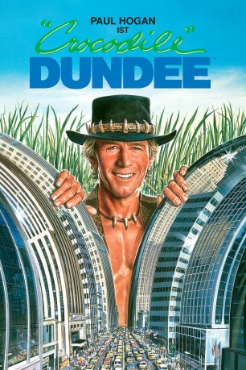

Auszeichnungen: für 1 Oscars nominiert 1 GoldenGlobes gewonnen
 gesehen am 19.07.2015
gesehen am 19.07.2015Alternativ: Crocodile Dundee
Auszeichnungen: für 1 Oscars nominiert 1 GoldenGlobes gewonnen gesehen am 19.07.2015
 
 IMDB-Wertung: 6.5 / 10
IMDB-Wertung: 6.5 / 10  Metascore:
Metascore: 
Die amerikanische Journalistin Sue Charlton reist nach Down Under, um Mick „Crocodile“ Dundee kennenzulernen, über den sie abenteuerliche Geschichten rund um einen Kampf gegen ein Krokodil gelesen hat. Und tatsächlich erweist sich der australische Buschmann als naturverbundener Bursche, der es mit den Gefahren der australischen Flora und Fauna locker aufnehmen kann, weil er gelernt hat, auch in schwierigen Verhältnissen zu überleben. Fasziniert von dem Hinterwäldler lädt Sue Mick ein, sie nach New York zu begleiten. Dort muss Crocodile Dundee lernen, dass die Gefahren des Natur- und die des Großstadtdschungels nicht die gleichen sind. Aber der kernige Australier weiß natürlich, wie man sich einer neuen Umgebung anpasst und seine im Busch erworbenen Fähigkeiten aus stoischer Ruhe und kämpferischem Können kann er auch in New York anwenden.
Jahr: 1986
Dauer: 97 Minuten
FSK: 6
Land: Australien Studio: CBS/FoxTonspuren: DD2.0 - ,
Untertitel:
Auflösung: 720p (1280x544) Größe: 4444 MB
Regisseur: Peter Faiman
Drehbuch: Ken Shadie, John Cornell, Paul Hogan, Paul Hogan
Soundtrack: Peter Best
Darsteller:
 Paul Hogan als Michael J. 'Crocodile' Dundee
Paul Hogan als Michael J. 'Crocodile' Dundee David Gulpilil als Neville Bell
David Gulpilil als Neville Bell Mark Blum als Richard Mason
Mark Blum als Richard Mason Reginald VelJohnson als Gus
Reginald VelJohnson als Gus John Snyder als Pimp
John Snyder als PimpDatei: X:\4-Tetralogie(A-K)\Crocodile Dundee\Crocodile Dundee 1 - Ein Krokodil zum Küssen (1986, FSK12, 1280x544).mkv seit 14.07.2015
Festplatte: HD Collection-3(N-Z)-6(A-Z)
 Es gibt insgesamt 7 Filme in der Gruppe '4-Tetralogie(A-K)\Crocodile Dundee'
Es gibt insgesamt 7 Filme in der Gruppe '4-Tetralogie(A-K)\Crocodile Dundee'